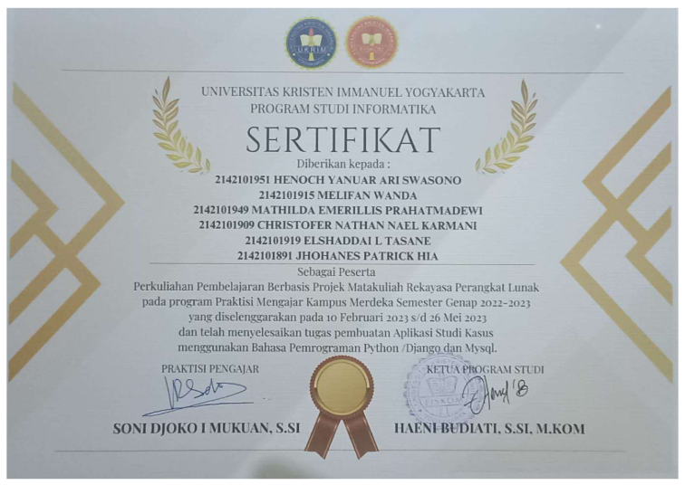
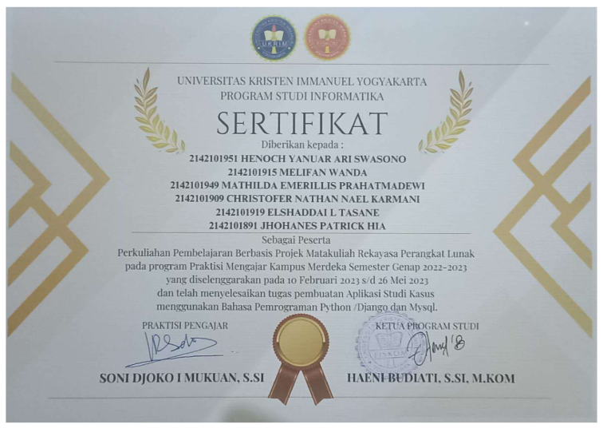
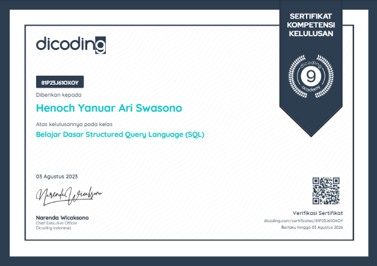
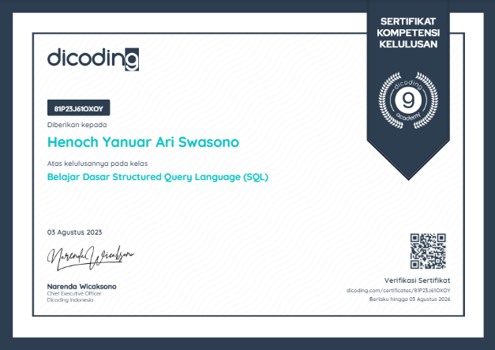

Hello I am a
Full-Stack Web Developer
My name is Henoch Yanuar Ari Swasono, I am a junior Full-Stack WebDeveloper, I have the ability to design and build intuitive user interfaces and develop efficient server-side logic. intuitive interfaces and develop efficient server-side logic. I also have the ability to design databases with efficient logic.
About Me
As an informatics student, I have learned to master and develop my knowledge of various programming languages, especially in website development. website development. Some of the programming languages and frameworks that I master include Python, PHP, JavaScript/Node.js, MySQL, Laravel, Django, and Express.js.
In addition to being able to design and develop websites, I believe that I also have good problem-solving and intuitive skills, and am able to think critically and systematically. I am a person who is passionate about self-development and learning new things.
My Services
Back-End Developer
As a junior Back-End Developer, I offer reliable and efficient back end development services to meet your application needs. My focus is on ensuring that your application server and database are running optimally, securely and reliably.
The services I offer as a Back-End developer are API development with programming languages that I can use, including JavaScript/Node.js, Python, and PHP, with various frameworks namely, Express.js, Django, and Laravel.
Full-Stack Web Developer
As a junior Full-Stack Web Developer, I provide web services that cover the entire spectrum of front-end and back-end technologies.
The services I offer as a Full-Stack Web Developer are Front-End and Back-End Development with several programming languages and frameworks at my disposal, including JavaScript, HTML, CSS, and Bootstrap for Front-End, and Node.js/Express.js, Python/Django, and PHP/Laravel for Back-End.
Database Engineer
As an junior Database Engineer, I offer complete services for database design, management and optimization. With expertise in a variety of database management systems, I can help you ensure that your company's data is managed securely, efficiently and easily accessible.
The services I offer as a Database Engineer are database design and architecture, database performance optimization, data migration and integration, etc. In carrying out my duties as a database engineer, the technologies that I can use include MySQL and PostgreSQL.
Portfolio

 

 



Contact Me
Thank You
Thank you for your visit, if you are interested in what I have to offer, you can contact me through one of the contacts I have attached below, or send an email through the form on the side for more information. Thank you
+62 857-0325-7890
@henochyanuar
henochyanuar13@gmail.com
henoch.yanuar.a@mail.ukrim.ac.id